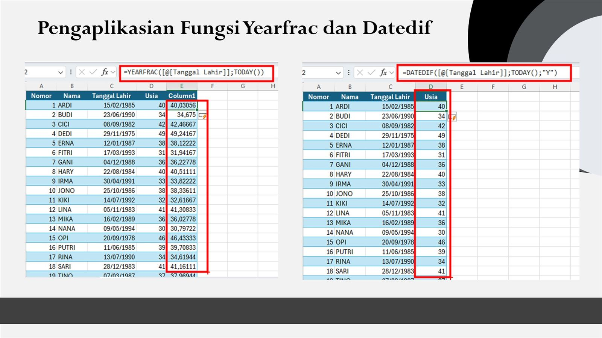

Tu arqueo de caja depende de un Excel que alguien llena a mano, con datos que alguien escribió sin verificar. ¿El resultado? Discrepancias que nadie explica, horas perdidas en cuadres que no cuadran, y pérdidas que se acumulan mes tras mes. La IA para Excel cambia completamente esta ecuación: automatiza la entrada de datos, la comparación, las alertas y los reportes. Sin errores humanos, sin manipulación, sin excusas.

En este artículo te explicamos qué es la inteligencia artificial aplicada a Excel, por qué el Excel manual falla en el arqueo de caja, y cómo transformar tu proceso con 5 automatizaciones que te ahorran tiempo y dinero desde el primer día.
¿Qué es la IA para Excel?
La IA para Excel es la aplicación de técnicas de inteligencia artificial —transcripción de audio, procesamiento de lenguaje natural, detección de anomalías y generación automática de reportes— a las hojas de cálculo que ya usas en tu negocio.
En lugar de que un empleado abra un archivo Excel, escriba los números, aplique fórmulas y envíe el resultado, la IA en Excel hace todo esto automáticamente:
- Captura datos desde fuentes reales (audio, POS, sensores) sin intervención humana
- Transcribe y procesa conversaciones del punto de venta en texto searchable
- Compara automáticamente ventas POS vs conteo físico
- Genera alertas cuando detecta discrepancias fuera de rango
- Envía reportes por correo, WhatsApp o Telegram al final del día
La diferencia clave: Un Excel manual depende de que alguien escriba bien los números. Un sistema de arqueo con IA captura los datos directamente de la fuente. No hay espacio para error ni para manipulación.
Por qué el Excel manual falla en el arqueo de caja
El cuadre de caja en Excel es el método más usado en Colombia para controlar el efectivo. Pero tiene problemas estructurales que la inteligencia artificial resuelve:
1. Error humano en la digitación
El promedio de error en la digitación manual de datos financieros es del 3-5%. En un negocio que maneja $2.000.000 diarios en efectivo, eso son hasta $100.000 que no sabes dónde están.
2. Manipulación sin evidencia
Un archivo Excel se puede editar en cualquier momento. No hay registro de quién cambió qué dato, ni cuándo. Sin evidencia de audio y video, no tienes forma de verificar qué pasó realmente.
3. Formatos inconsistentes
Cada turno usa un formato diferente. Uno pone "Billetes 20K", otro pone "20,000", otro pone "veinte mil". Comparar estos datos manualmente toma horas.
4. Sin alertas automáticas
Si hay una diferencia de $50.000 en la caja, nadie se entera hasta que alguien revisa el Excel. Y generalmente nadie lo revisa.
5. Reportes que nunca se envían
El archivo Excel queda en la computadora del cajero. El gerente nunca lo ve. El dueño se entera cuando ya es demasiado tarde.
Según datos de 2026, el 45% de las discrepancies en caja en negocios colombianos son procesos sin supervisión. No es que te roben: es que no tienes forma de saber qué pasó.
5 formas en que la IA transforma el Excel para arqueo
La inteligencia artificial no reemplaza Excel: lo potencia. Estas son las 5 automatizaciones que transforman tu archivo de Excel en un sistema de control inteligente:
1. Captura automática de datos
En lugar de que alguien escriba los números de la caja, un sistema de checkpoint de red captura el audio y video del cierre de turno. La IA transcribe cada palabra: cuánto contó el cajero, qué billetes tenía, cuánto dio de cambio.
- No hay digitación manual
- No hay error humano
- La fuente es verificable (audio/video)
2. Transcripción inteligente del conteo
El motor de IA transcribe automáticamente la conversación del punto de venta. Cada palabra queda indexada y searchable. Si quieres saber qué pasó a las 3:45 PM, solo buscas en el sistema.
Ejemplo real: "Conté 48 billetes de 50, 22 de 20, 15 de 10... total 3.200.000. Di 150.000 de cambio." La IA extrae automáticamente: billetes 50K: 48 ($2.400.000), billetes 20K: 22 ($440.000), billetes 10K: 15 ($150.000). Total: $2.990.000. Discrepancia detectada.
3. Comparación POS vs conteo físico
La IA genera automáticamente un archivo de Excel que compara:
| Dato | Fuente | Automatización IA |
|---|---|---|
| Ventas del día | POS / Sistema de ventas | Importación automática |
| Conteo físico | Audio transcrito | Extracción de IA |
| Diferencia | Calculada | Cálculo automático |
| Evidencia | Audio + Video | Almacenamiento seguro |
4. Alertas automáticas por discrepancia
Si la diferencia entre el POS y el conteo físico supera un umbral configurado, el sistema envía una alerta inmediata. No necesitas revisar cada Excel manualmente.
- Alerta por WhatsApp: "Caja 1: diferencia de $75.000 detectada a las 8:45 PM"
- Alerta por correo: Reporte completo con transcripción adjunta
- Dashboard en tiempo real: Estado de todas las cajas en un solo lugar
5. Reportes automáticos enviados
Al final de cada jornada, el sistema genera un archivo de Excel con el comparativo completo y lo envía automáticamente por:
- Correo electrónico al gerente
- WhatsApp al dueño
- Telegram para archivo histórico
¿Quieres automatizar tu arqueo de caja?
Arqueo Inteligente APC te entrega una mini PC configurada + checkpoint de red. Transcripción de audio, grabación de video y Excel automático al final del día. Sin fórmulas, sin errores humanos.
Agenda tu demo GRATIS →Casos de uso reales: IA para Excel en acción
La IA en Excel no es teoría. Negocios en Bogotá ya la están usando para transformar su arqueo de caja. Estos son 3 casos reales:
Restaurante: de 2 horas a 5 minutos
Un restaurante en Chapinero con 3 turnos diarios perdía 6 horas semanales en cuadres de caja manuales. El cajero escribía los números en Excel, el gerente los revisaba (a veces) y al final del mes siempre había diferencias de $200.000-$400.000 que nadie podía explicar.
Solución: Instalación de mini PC + checkpoint de red. Ahora el sistema transcribe automáticamente el conteo de caja, compara con el POS y envía el Excel al gerente por WhatsApp. Las discrepancias se detectan al instante. En 3 meses, las pérdidas cayeron un 89%.
Tienda de retail: visibilidad multi-sede
Una cadena de 4 tiendas en Bogotá usaba el mismo archivo Excel para todas las sedes. El formato era inconsistente, los datos se perdían y el dueño nunca sabía cuánto perdía realmente.
Solución: Cada sede tiene su mini PC configurada. Al final del día, el sistema genera un Excel por sede y un consolidado general. El dueño recibe un resumen por WhatsApp con las 4 sedes comparadas. Detectó que una sede tenía un patrón de faltantes los viernes — algo que nunca hubiera visto en un Excel manual.
Clínica dental: control de pagos en efectivo
Una clínica dental en Cali recibía el 60% de sus pagos en efectivo. El asistente contaba el dinero, lo escribía en un cuaderno y luego lo pasaba a Excel. No había forma de verificar si el conteo era correcto.
Solución: El sistema de arqueo inteligente graba la conversación del cierre, transcribe el conteo y lo compara con el sistema de citas. Cada pago queda registrado con evidencia de audio. Las discrepancies se redujeron a cero en el primer mes.
El patrón común: En los 3 casos, el problema no era la gente — era el proceso. Un Excel manual no tiene control de calidad. La IA para Excel elimina ese problema desde la raíz.
Calculadora de pérdida: ¿cuánto pierdes cada mes?
Antes de decidir, calcula cuánto te cuesta el arqueo manual. Usa nuestra calculadora para estimar tu pérdida mensual por horas perdidas y discrepancias no detectadas.
¿Cuánto pierdes cada mes?
O usa la calculadora completa en nuestra página de arqueo para dueños.
IA para Excel: más allá del arqueo de caja
La inteligencia artificial aplicada a Excel no se limita al arqueo. Puede automatizar todo tu proceso financiero diario:
- Comparación de inventarios: IA que cruza datos de POS con conteo físico de productos
- Detección de patrones: "Los faltantes son mayores los viernes" — la IA lo identifica automáticamente
- Predicción de flujo de caja: Modelos de IA que proyectan tu efectivo semanal
- Reconciliación bancaria: Cruce automático entre depósitos y registros contables
El archivo de Excel deja de ser un registro estático y se convierte en un sistema de inteligencia financiera que trabaja solo.
Calcula tu pérdida GRATIS
Descubre en 30 segundos cuánto pierdes cada mes por arqueos manuales. Sin compromiso, sin tarjeta.
Calcular mi pérdida →Preguntas frecuentes sobre IA y Excel
¿La IA para Excel reemplaza mi archivo actual?
No. La inteligencia artificial se integra con tu proceso existente. Tu archivo Excel sigue funcionando, pero ahora los datos se capturan automáticamente desde fuentes verificables (audio, POS, sensores). No necesitas cambiar tu infraestructura.
¿Necesito saber programar para usar IA en Excel?
No. Un sistema de arqueo inteligente como el de APC se configura y funciona automáticamente. No necesitas crear fórmulas, macros ni scripts. La IA hace el trabajo técnico por ti.
¿Qué tan precisa es la comparación automática POS vs conteo?
Nuestro sistema alcanza un 97% de precisión en la transcripción de audio y un 100% de precisión en la comparación numérica. Cada dato tiene evidencia de audio y video que puedes verificar en cualquier momento.
¿Puedo probar antes de contratar el servicio?
Sí. Ofrecemos una garantía de 7 días: si el sistema no te ahorra tiempo en tu arqueo de caja, lo retiramos sin costo. Sin preguntas, sin compromiso.
¿El reporte de Excel se envía automáticamente?
Sí. Al final de cada jornada, el sistema genera un archivo Excel comparativo y lo envía por correo electrónico, WhatsApp o Telegram. Sin que nadie lo haga manualmente. Tú decides a quién y por qué canal.
Conclusión
El Excel manual para arqueo de caja es un proceso lento, propenso a errores y sin evidencia verificable. La IA para Excel transforma ese proceso: captura datos automáticamente, compara con el POS, detecta discrepancias al instante y envía reportes sin intervención humana.
Si quieres saber cuánto pierdes cada mes por arqueos manuales, usa nuestra calculadora gratuita. O habla con nosotros por WhatsApp y te explicamos cómo funciona en tu negocio específico.
No dejes que tu archivo de Excel sea el eslabón débil de tu control financiero. La inteligencia artificial ya puede hacer este trabajo por ti — más rápido, más preciso y sin excusas.